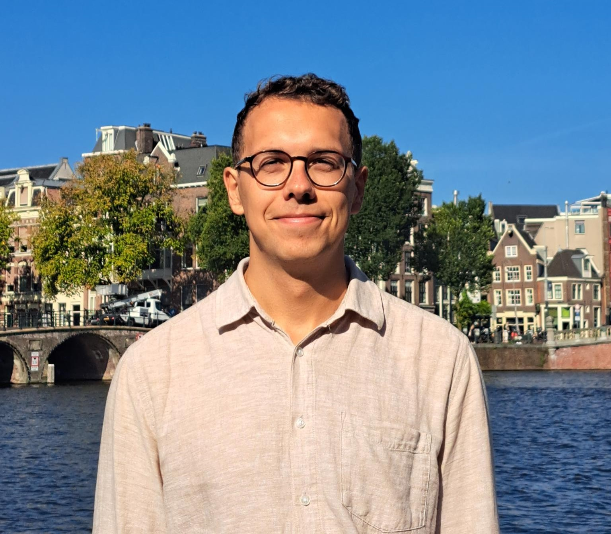

Institute of Computer Science
Czech Academy of Sciences
Pod Vodárenskou věží 2
182 07 Prague
email: osinski (at) cs.cas.cz

I am a logician with interests in mathematical logic and interdisciplinary applications of logic.
I am currently a postdoctoral researcher in the LogICS group of the Institute of Computer Science of the Czech Academy of Sciences in Prague.
Before coming to Prague, I was a postdoc at the University of Barcelona, funded through DAAD's postdoc programme. I obtained a PhD in mathematics from the University of Hamburg in 2024, supervised by Benedikt Löwe and Yurii Khomskii, and an M.Sc. in logic at the University of Amsterdam.
In Hamburg, I also held a Research Associate ("wissenschaftlicher Mitarbeiter") position.
Within mathematical logic, I work in set theory and abstract model theory, in particular on large cardinals and on their connections to properties of strong logics.
Regarding applications, I am interested in the usage of logic and other formal methods in the social and political sciences, in particular in international relations.
Publications
Articles
1. Victoria Gitman and Jonathan Osinski. Upward Löwenheim-Skolem-Tarski numbers for abstract logics. Annals of Pure and Applied Logic, 176(8):103583, 2025. DOI. arXiv.
2. Jonathan Osinski and Alejandro Poveda. Compactness characterisations of large cardinals with strong Henkin models. Zeitschrift für Mathematische Logik und Grundlagen der Mathematik, Vol. 72, pp. 45-53, 2026. DOI.
3. Will Boney and Jonathan Osinski. Model-theoretic characterizations of large cardinals (Re)2visited. To appear in Israel Journal of Mathematics. Preprint (arXiv).
Submitted Articles
1. Gabriel Goldberg, Jonathan Osinski, and Alejandro Poveda. On the optimality of the HOD dichotomy. Submitted. Preprint (arXiv).
2. Jonathan Osinski and Trevor Wilson. Model theory of class-sized logics. Submitted. Preprint (arXiv).
Theses
1. Jonathan Osinski. Interactions between Large Cardinals and Strong Logics. PhD thesis, University of Hamburg, 2024. Download. (Supervisors: Benedikt Löwe and Yurii Khomskii)
2. Jonathan Osinski. Symbiosis and Compactness Properties. Master thesis, ILLC Master of Logic (MoL) Series MoL-2021-24. (Supervisor: Yurii Khomskii)
Talks
1. Model-theoretic properties up to Vopěnka's Principle and beyond, Applied Mathematical Logic Seminar, Czech Academy of Sciences, Institute of Computer Science, Prague, Czechia, June 03, 2026.
2. Strong logics for generating large cardinal notions, Logica 2026, Hejnice, Czechia, May 20, 2026.
3. L-extendible cardinals and some of their relatives, Barcelona Set Theory Seminar, University of Barcelona, Barcelona, Spain, October 08, 2025.
4. Some new results on ULST and strong ULST numbers for general logics, Logic Colloquium, Vienna, July 07, 2025.
5. Model Theory and Vopěnka's Principle, Masaryk University Algebra Seminar, Masaryk University, Brno, Czechia, June 12, 2024.
6. Upward LST Numbers and Large Cardinals, Harvard University Logic Seminar, Harvard University, Cambridge, USA, April 29, 2024.
7. Model Theory of class-sized Logics, CUNY Set Theory Seminar, CUNY GC, online, March 08, 2024.
8. New Results on Upward LST numbers, Set Theory in Hamburg and Cambridge (STiHaC) research seminar, online, November 03, 2023.
9. The Large Cardinal Strength of Upward LST Numbers, DMV Jahrestagung 2023, Meeting of the German Mathematical Association, Ilmenau, Germany, September 27, 2023.
10. Model Theoretic Characterizations of Weak Vopěnka's Principle, Set Theory in Hamburg, Amsterdam, and Cambridge (STiHAC) research seminar, online, May 05, 2023.
11. Model Theoretic Characterizations of Weak Vopěnka's Principle, CUNY Set Theory Seminar, CUNY GC, New York City, USA, March 17, 2023.
12. What is a large infinity?, talk for a general audience of non-mathematicians, Logic@TXST Speaker Series, Texas State University, San Marcos, USA, February 22, 2023.
13. A Hierarchy of Compactness Cardinals below Vopěnka's Principle, Colloquium Logicum, Conference for the 60th anniversary of the foundation of the DVMLG, Konstanz, Germany, September 26, 2022.
14. A Hierarchy of Compactness Cardinals below Vopěnka's Principle, Set Theory in Hamburg, Amsterdam, and Cambridge (STiHAC) research seminar, online, March 18, 2022.
15. Symbiosis and Compactness Properties, Set Theory in Hamburg, Amsterdam, and Cambridge (STiHAC) research seminar, online, July 01, 2021.
Research Visits
2024:
Masaryk University. Hosts: Michael Lieberman and Jiří Rosický.
2024:
Harvard University. Host: Alejandro Poveda.
2023:
City University of New York Graduate Center. Host: Victoria Gitman.
2023:
Miami University. Host: Trevor Wilson.
2023:
Texas State University. Host: Will Boney.
Education
2024:
Doctorate in Mathematics, with distinction (summa cum laude), Universität Hamburg.
2021:
M.Sc. in Logic, Universiteit van Amsterdam, Institute for Logic, Language and Computation.
2019:
B.Sc. in Mathematics, Ruprecht-Karls-Universität Heidelberg.
2017:
B.A. in Philosophy (75%) and History (25%), Ruprecht-Karls-Universität Heidelberg.
Academic positions
Since 04/2026:
Postdoctoral Researcher Czech Academy of Sciences Institute of Computer Science.
10/2025 - 03/2026:
Postdoctoral Researcher funded through DAAD postdoc programme University of Barcelona Department of Mathematics and Computer Science.
10/2021 - 09/2025:
Research Associate ("wissenschaftlicher Mitarbeiter") University of Hamburg Department of Mathematics, Group for Mathematical Logic and Interdisciplinary Applications of Logic.
Teaching
At the University of Hamburg, I taught exercise sessions for the following lectures.
SoSe 2025:
Mathematische Logik und Mengenlehre
WiSe 2024/25:
Mathematik I für Studierende der Informatik
WiSe 2023/24:
Mathematik I für Studierende der Informatik
SoSe 2023:
Mathematische Logik und Mengenlehre
WiSe 2022/23:
Einführung in das mathematische Denken und Arbeiten
SoSe 2022:
Mathematische Logik und Mengenlehre
WiSe 2021/22:
Grundkonzepte der Geometrie
Last update: June 30, 2026. This website uses LaTeX.css.